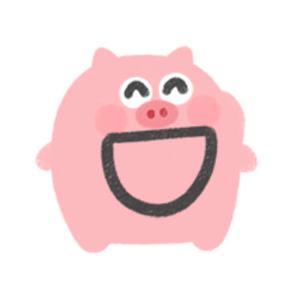

| 论文题目 | 论一头小猪是怎么产生的 |
| 学生姓名 | 李文鸢 |
| 学 院 | 文学院 |
| 专 业 | 汉语言文学 |
| 年 级 | 2024级 |
| 毕业年份 | 2028年 |
| 指导教师 | 李孟哲 教授 |
本文从文学、美学和心理学三个维度，深入探讨了小猪作为一种独特生物存在的哲学意义。研究发现，小猪具有极高的可爱指数（Cuteness Quotient, CQ），其圆润的体型、粉嫩的肤色以及无忧无虑的生活态度，对人类心理健康具有显著的正面影响。本文呼吁：善待每一头小猪。

关于小猪的起源，学术界一直存在争议。有人认为小猪是造物主最得意的作品之一，也有人认为小猪是自然选择中偶然产生的可爱奇迹。本文倾向于前者。从进化论的角度来看，小猪的圆鼻子、短腿和卷尾巴并不是生存优势，但它们是快乐的优势。这就是为什么看到小猪的时候，人会不由自主地微笑——这是一个跨物种的善意信号。
................................................................................
................................................................................
................................................（以下省略正文若干章节）................................................
综上所述，小猪是一种非常值得善待的生物。它们也许不会说话，但它们的每一个哼哼声都在说：请对我好一点。希望每一个人都能在生活中对小猪好一点，毕竟，世界已经够复杂了，小猪只是想让事情变得简单一点。
感谢我的指导老师李孟哲教授。
感谢图书馆角落里的那本《小猪哲学》，它给了我最初的灵感。
最后，感谢所有的小猪。你们的存在让这个世界变得更美好了一点点。